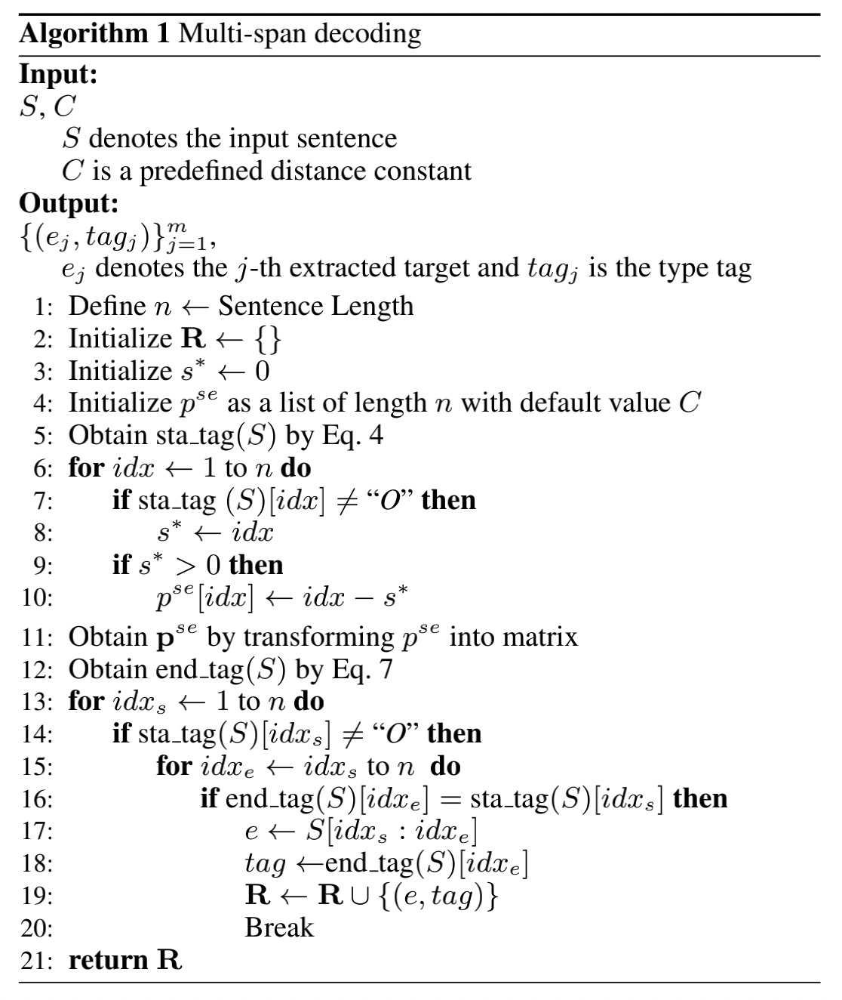

Joint Extraction of Entities and Relations Based on a Novel Decomposition Strategy -ECAI2020
摘要
实体关系的联合抽取任务旨在训练出可以检测实体对及其对应关系的单一模型。先前的工作把这项任务通过extract-then-classify或者unified labeling的方法实现。然而这些方法要么受制于冗余的实体对，要么忽视了实体和关系抽取两项任务之间重要的内部联系。
在本论文中，首先将联合抽取任务分解为两个相关联的子任务：HE extration 和 TER extration。HE子任务首先找到与目标关系相关联的所有头实体；TER是针对每一个抽取的头实体识别相应的尾实体和关系。接下来使用基于span的标记方案把这两个子任务进一步分解为多个序列标记问题，并采用分层边界标记和多跨解码算法方便地解决这些问题。
得益于合理的分解策略，该模型能充分捕捉不同步骤之间的语义依赖关系，同时减少了来自无关实体对的噪声。实验结果表明该模型F1得分比之前的工作提升了5.2%，5.9%，21.5%，在三个公共数据集上实现了新的突破。
1 介绍
在非结构化的文本中抽取实体对以及相应的关系是构建知识图谱的一个重要步骤，一个理想的关系抽取系统应该具有抽取重叠关系的能力（多个三元组共享相同的实体）。传统的pipeline方法首先识别出实体然后为每一对可能抽取的实体对选择一个关系，pipeline方式易于实现但是忽视了两个子任务底层之间的联系。一种改进的方式是让它们联合训练，这样它们的参数可以共享，虽然这种方法有一定的提升，但是依然需要两个分开的components处理两个任务。后果是关系分类器会被冗余的实体对所误导，因为N个实体会产生$N^2$个实体对，其中大部分属于NA$($non-relation$)$类。
现有的联合模型该对重叠关系的识别不够优雅，这可能导致在处理具有重叠关系$($overlapping relations = mutiple relations share a common entity$)$的句子时记忆效果不佳。尾实体和关系应该依赖于一个特定的头实体，因此如果一个模型未完全捕捉到头实体的语义，那么尾实体和关系的提取结果就不可靠。另一方面，相比于extract-then-classify的模型，该模型只识别可能参与目标三元组的头实体，从而减轻了冗余实体对的影响。
利用基于span的标记方案进一步分解了HE和TER抽取。具体来说，对于HE提取，实体类型在每个头实体的开始和结束位置标记。对于TER提取，我们在与给定头实体有关系的所有尾实体的开始和结束位置标注关系类型。为了增强边界位置之间的关联，我们提出了一个分层的边界标记器，它将起始点和结束点标记出来。总的来说，对于一个有m个头实体的句子的抽取任务会被分解为2+2m个序列子任务，前2个用于HE标注，同时标注m个头实体的Starts Tag和Ends Tag；其他2m用于TER标注，对于m个头实体分别标注对应三元组的尾实体的Starts Tag和Ends Tag。

2 方法
2.1 标记方案
对于一次HE任务可以分解为两个子任务，第一个子任务主要关注与识别头实体的start position，对于每一个word若是start position word将其标记为对应的实体类型，否则为其分配标记“O”；第二个子任务则标记相应的end position。
对于每一个以识别的头实体，TER一样被分解为两个序列标记子任务，抽取头实体对应尾实体的start position和end posotion，迭代m次。

2.2 分层的边界标记器
根据2.1的标记方案，我们使用一个统一的架构（HBT）来提取HE和TER。在句子$S$中一个目标实体$t$被标记为类型$l$的概率为：
$$
p(t,l|S)\ =\ p(s_t^l|S)p(e_t^l|s_t^l,S) \tag{1}
$$
其中$s_t^l$是带l标签的实体t的start index，$e_t^l$是end index。这种分解方式存在start和end索引的抽取顺序，结合start index的信息能更准确地抽取end index，这也是设计成分层结构的原因。在Figure 2中，我们把低层tagging结果和隐藏状态作为高层的输入，在这个工作中我们使用BiLSTM作为基础的encoder。具体的，预测实体$x_i$的start position的计算过程为：
$$
h_i^{sta}=BiLSTM_{sta}([h_i；a_i])\tag{2}
$$
$$
P(y_i^{sta})=Softmax(W^{sta}·h_i^{sta}+b^{sta})\tag{3}
$$
$$
sta\underline{\ }tag(x_i)=argmax_kP(y_i^{sta}=k)\tag{4}
$$
$h_i$代表所有单词表征，$a_i$是辅助向量。对于HE任务，$a_i$是整个句子的全局表征，而对于TER任务，$a_i$除了句子的全局表征，还包含已经tagging头实体的语义和位置信息嵌入。$x_i$的end tag计算过程如下：
$$
h_i^{end}=BiLSTM_{end}([h_i^{sta}；a_i；p_i^{se}])\tag{5}
$$
$$
P(y_i^{end})=Softmax(W^{end}·h_i^{end}+b^{end})\tag{6}
$$
$$
end\underline{\ }tag(x_i)=argmax_kP(y_i^{end}=k)\tag{7}
$$
相比于start tag的计算，end tag的计算中有一个额外的位置嵌入$p_i^{se}$作为输入。$p_i^{se}$是一个可训练的位置嵌入，它的表达式为：
$$
p_i^{se}=
\begin{cases}
i-s^x,& if\ s^x\ exists\\
C,& otherwise
\end{cases}
\tag{8}
$$
其中$s^*$代表在目前位置前面标有start tag的最近位置索引，如果$x_i$位置前面没有$s^*$，则值为常数C，C设置为句子的最大长度。通过这种方式限制了提取实体的长度，并且告诉模型结束位置不可能在开始位置之前。HBT的损失函数定义如下：
$$
L_{HBT}=-\frac{1}{n}\sum^n_{i=1}(logP(y_i^{sta}=\widehat{y}_i^{sta})+logP(y_i^{end}=\widehat{y}_i^{end}))\tag{9}
$$
n表示输入句子的长度，$\widehat{y}_i^{sta}和\widehat{y}_i^{end}$表示第i个word的正确start tag和end tag。以下是抽取实体的算法过程：

2.3抽取系统
2.3.1 共享的encoder
给定一个句子S = {$x_1,…,x_n$}，我们使用BiLSTM层整合前后方向的信息：
$$
h_i\ =\ BiLSTM_{sha}(X_i)\tag{10}
$$
其中$h_i$是位置i处的hidden state，$X_i$包含$x_i$的预训练嵌入和运行于CNN中单词的字符序列的词嵌入。同时还使用了POS$($part-of-speech$)$嵌入来丰富$X_i$。
2.3.2 HE Extractor
提取器的目的是区分候选头实体，排除不相关的头实体。